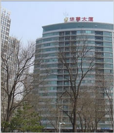

相关导航分类
- 公司简介
- 企业文化
- 综合服务
- 视频欣赏
- 公司荣誉


公司简介


今天凌晨，苹果正式发布了三款新iPhone，分别是iPhone 8、iPhone 8 Plus以及iPhone X。 iPhone 8/8 Plus和iPhone 7/7 Plus大体基本一致，延续4.7寸和5.5寸的屏幕（分辨率未变），正面Home键。 不过细节方面的调整也不少，首先是改用双玻璃材质，但苹果强调玻璃材质经过七层色彩处理，并有钢和铜加固，非常坚实。
iPhone 8是单颗1200万像素，iPhone 8 Plus是双1200万像素，不过苹果强调采用面积更大、速度更快的感光元件，视频拍摄支持4K 60FPS。闪光灯加入了“慢速同步技术”，前置则完全一致的700万像素。 而iPhone X采用了前后双玻璃机身，搭配航空铝材质边框 ，只有深空灰色和银色风格(8系列还有金色)，整体尺寸143.6×70.9×7.7毫米，重量174克。
iPhone X配备了一块 5.8寸的OLED超视网膜全面屏，分辨率2436×1125(像素密度458PPI)，标准对比度100万:1，最大亮度625cd/m2 ，支持DCI-P3广色域、HDR显示、原彩显示，搭载防油渍防指纹涂层，IEC 60529标准下达到IP67级别。 处理器是苹果自主研发的A11 Bionic仿生芯片，集成神经网络引擎、M11运动协处理器，内部六个CPU核心、三个GPU核心。 价格等具体信息，大家可以参考新浪科技的带来的下图。
我们的服务宗旨：合作、创新、共赢、发展